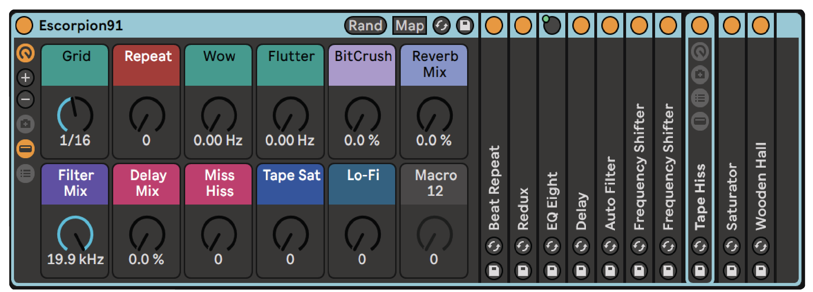

Falso 9, escorpión91, brujo, fan del twang, ex-deportista alto
rendimiento,
Octane main, todo o nada.
Próximamente podrás descargar toda la discografía gratis en formato mp3
aquí, o en Tigre de Jade Records.
Fenómeno está produciendo un disco, el cual será impreso en vinilo y no será subido de manera oficial a ninguna plataforma.
Para comprar el disco en vinilo,
formato wav y/o comprar merch, visita
Tigre de Jade Records (en construcción a la fecha 03/22)
Toma el salto
Información, contratos o decir hola
contacto@fenomenomenofeno.com
04/2022
+
+
Usuarios de Ableton pueden descargar gratis escorpión91,
un Audio Effect Rack enfocado en emulación de cinta.

Descargar
Tigre de Jade Records
+
+
Próximamente podrás descargar toda la discografía gratis en formato mp3
aquí, o en Tigre de Jade Records.
Fenómeno está produciendo un disco, el cual será impreso en vinilo y no será subido de manera oficial a ninguna plataforma.
Para comprar el disco en vinilo,
formato wav y/o comprar merch, visita
Tigre de Jade Records (en construcción a la fecha 03/22)